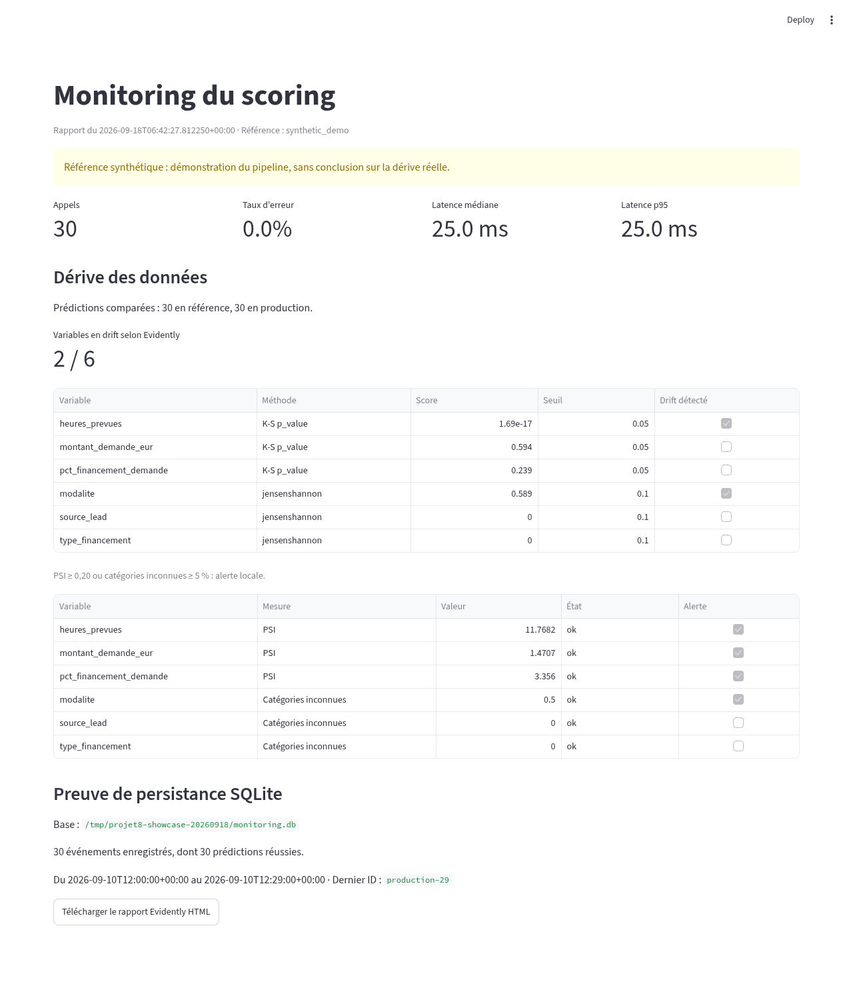

FastAPI
POST /predict et GET /health publics.
Soutenance · Démonstration guidée
Un modèle du Projet6 exposé par API, déployé sur Render et suivi avec SQLite, Evidently AI et Streamlit.
01 / Le modèle
Le pipeline XGBoost du Projet6 estime la probabilité qu’un dossier gagné n’aille pas au bout. Il est chargé une seule fois au démarrage de l’API.
Recalculée depuis les scores sauvegardés.
Mesure de classement des dossiers à risque.
Faux négatif pondéré 5× plus qu’un faux positif dans ce run.
02 / Architecture
POST /predict et GET /health publics.
Entrées validées, score, statut et latence.
Import idempotent par identifiant d’événement.
Référence versus événements importés.
Métriques, drift et preuve de stockage.
GitHub Actions exécute les tests et le contrôle Docker avant le déploiement Render. Les données de monitoring restent en local : la base SQLite et les exports ne sont pas publiés.
03 / Démo en direct
Ouvrir Swagger, choisir POST /predict, cliquer sur « Try it out », coller le JSON de test puis exécuter.
Données fictives, compatibles avec les 44 champs requis.
Utiliser l’API locale pour le contrat corrigé. L’appel crée un événement de test local ; le rapport Streamlit présenté ici utilise une simulation distincte.
risk_score nombre entre 0 et 1 threshold 0.06 risk_flag booléen model_name xgboost_search model_version 2026-06-15
{
"client_ape_division": 62.0,
"client_departement": "75",
"client_effectif": 25.0,
"client_idcc": 1486.0,
"client_nb_prior_dossiers": 3,
"client_opco_habituel": "opco-alpha",
"client_prior_nb_fails": 1,
"client_prior_nb_ok": 2,
"client_prior_nb_opcos_distincts": 1,
"client_prior_win_rate": 0.67,
"client_rang_dossier": 2,
"client_tranche_effectif": "11-49",
"annee_creation": 2018.0,
"ape_division": 62.0,
"departement_client": "75",
"duree_sous_seuil_min": false,
"ecart_heures_vs_seuil_min": 7.0,
"effectif_client": 25.0,
"est_nouvel_opco_pour_client": false,
"funder_max_factures": 4.0,
"funder_min_heures_facturable": 7.0,
"funder_nom": "funder-alpha",
"heures_prevues": 21.0,
"idcc": 1486.0,
"is_premier_dossier": false,
"is_rush_q4": false,
"is_session_ete": false,
"jours_depuis_dernier_dossier": 90.0,
"modalite": "Formation INTRA à distance synchrone",
"mois_creation": 6.0,
"montant_ca_eur": 300000.0,
"montant_demande_eur": 2100.0,
"opco_habituel_client": "opco-alpha",
"pct_financement_demande": 0.8,
"source_lead": "Repeat",
"taux_horaire_demande_eur": 100.0,
"thematique": "data",
"tranche_effectif": "11-49",
"trimestre_creation": 2.0,
"type_financement": "PDC",
"hg_departement_client": "75",
"hg_idcc": 1486.0,
"hg_opco_entreprise": "opco-alpha",
"hg_taille_entreprise": 25.0
}04 / Preuve de stockage
Les événements de test sont importés une fois, puis relus depuis une nouvelle connexion à la base. Le même export réimporté n’ajoute aucune ligne.
Période simulée : 10 septembre 2026, 12:00–12:29 UTC. Dernier event_id : production-29.
Contrôle SQL présenté au jury
SELECT COUNT(*),
MIN(timestamp),
MAX(timestamp)
FROM prediction_events;La clé primaire event_id rend l’import idempotent. Les fichiers SQLite, exports et rapports sont ignorés par Git.
05 / Evidently AI
30 références et 30 événements simulés, complets sur six variables.
heures_prevues franchit le seuil de 0,05.
modalite franchit le seuil de 0,10.
Deux alertes PSI supplémentaires ne sont pas confirmées par Evidently ici.
06 / Visualisation
Un seul écran regroupe l’activité de l’API, les tests de drift et la preuve SQLite. Un avertissement signale si la base a changé depuis le dernier rapport.
Le lien local fonctionne lorsque Streamlit tourne sur cet ordinateur. La capture reste disponible sans serveur.

07 / Relecture critique
Les artefacts sont identiques. Après correction des booléens, des valeurs null et des zéros, l’API accepte 248 / 248 dossiers du holdout et reproduit leurs scores.
source_lead manque sur 879 des 994 lignes d’entraînement. Une référence fondée seulement sur les cas complets serait biaisée.
Les 248 lignes du holdout sont complètes sur les six variables. Elles ont été exportées localement sans identifiants ni labels et exclues de Git.
dossiers signalés au seuil 0,06 sur le holdout. Le coût métier baisse selon la pondération du Projet6, mais la charge d’alertes est élevée.
Changer le seuil ou réentraîner exige des labels ultérieurs et une validation temporelle indépendante. La référence privée n’a pas encore été comparée à un volume représentatif de production Render. Audit complet ↗
08 / Qualité et limites
| Élément | État vérifié | Portée |
|---|---|---|
| API et déploiement | Render /health et /docs répondent HTTP 200 ; contrat corrigé testé en local | Publication du correctif Render à confirmer. |
| Tests et CI | 42 tests locaux réussis ; dernier workflow GitHub publié réussi | Contrat API, monitoring, stockage et construction Docker contrôlés. |
| Monitoring | SQLite, Evidently et Streamlit exécutés de bout en bout | Scénario synthétique reproductible, pas une conclusion de production. |
| Modèle et contrat | Artefact identique au Projet6 ; 248 / 248 scores API reproduits | Pas de labels de production pour mesurer la qualité future. |
| À poursuivre | Logs Render représentatifs, performance, gouvernance et rétention | Conditions nécessaires pour une surveillance durable. |
09 / Parcours de démo
Montrer Render /health, puis envoyer le JSON sur l’API locale corrigée.
Ouvrir Swagger ↗Lire les 2 variables décalées et l’avertissement « synthétique ».
Ouvrir Streamlit ↗Afficher les 30 lignes persistées, puis la CI et l’audit du modèle.
Preuve SQLite ↗Conclusion orale : « L’API est en ligne, la chaîne de monitoring est démontrée et ses limites sont explicites. La prochaine étape est d’évaluer la dérive et la qualité sur de vraies données de production gouvernées. »
Navigation : ← → ou Espace · N pour les notes orales · Imprimer pour exporter en PDF.